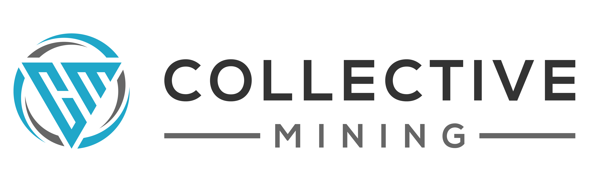

Presentaciones
Informes y presentaciones publicados por la Alianza Educación Rural. Se abren directamente en el navegador, en computador o celular: no hay nada que descargar ni instalar.
2 publicaciones Actualizado agosto 2026
-
 Informe
Informe
I.E. Maltería
Estado del Modelo de Educación Rural con Escuela Nueva.
- Entidad
- Comité de Cafeteros de Caldas
- Publicado
- Agosto 2026
-

PresentaciónCollective Mining
La Universidad en el Campo, con la I.E. Rafael Pombo.
- Entidad
- I.E. Rafael Pombo · Marmato
- Publicado
- Julio 2026
-
Añadir una presentación
Crea una carpeta con su
Abrir el repositorioindex.htmly duplica una ficha en elindex.htmlde la raíz.
Sin coincidencias
Ninguna publicación coincide con «».